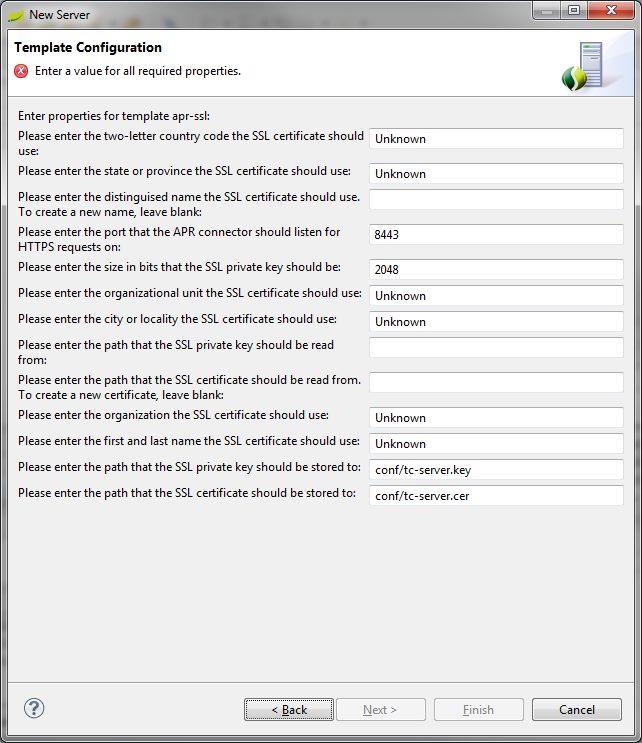

General Updates
Eclipse Juno SR2 on the horizon
While the Eclipse Juno SR2 releases is on the horizon, but not yet shipped, we built our Eclipse-3.8 and Eclipse-4.2-based distributions on top of the latest maintenance builds of Eclipse Juno. So these distributions already contain the very latest fixes and improvements from the Eclipse team.
Grails 2.2
The GGTS distributions now include Grails 2.2.0.
Performance Improvements
We are working on improving performance all over the place in STS and GGTS. At the same time, the Eclipse platform team is also working on solving performance issues in the new platform UI implementation, also known as the Eclipse 4.2 platform. STS/GGTS 3.2.0.M2 adopts the latest changes from Eclipse Juno SR2 RC1, which contains a lot of fixes from the Eclipse team. The STS/GGTS 3.2.0.RELEASE (scheduled for early March 2013) will be built on top of Eclipse Juno SR2.
We still recommend to use the STS/GGTS builds on top of Eclipse 3.8 in order to archive maximum performance and stability.
Spring Development Tools
Performance Improvements
We are working on improving performance inside the Spring tooling. This targets two areas:
- Make STS as fast as plain Eclipse when working with Java files. Therefore we identified and fixed a number of issues that made Java editing and content-assist a bit slower than with plain Eclipse, even for non-Spring-related Java files.
- Improve the performance of the Spring specific project builders. Reading and validating the Spring configurations in XML and Java files caused performance issues in the past from time to time and the goal is to be able to run validations and metadata builders all the time without hitting performance problems.
STS 3.2.0.M2 already contains a number of fixes in both areas. We were able to improve performance in certain areas of the additional Spring project builders by a factor of 10. However, there is still work to do and we will continue with this before we ship the final 3.2.0 release.
For additional information and continuous progress reports, take a look at the JIRA ticket for this: STS-3054
Code completion for common findBy.. methods in a Spring Data repository class
Code completion is now available for findBy... methods for properties that are defined inside the domain class associated with a Spring Data repository class

Code validation for findBy... methods
Code validation is added to check for consistency between parameter type of a findBy... method and the corresponding property type defined in the associated domain class.
Live Beans Graph
This milestone introduces a new tree mode for the Live Beans view. Beans are grouped by the resource from which they originate and expanding a bean will list all beans it depends on or is injected into. This display mode can be toggled with the graph mode from the toolbar of the Live Beans view.

vFabric tc Server Integration
Improvements to the New Server wizard
When creating a new tc Server instance and selecting a template the wizard will now prompt for missing template properties values. The wizard will also provide default values if defined in the template.

Groovy and Grails Development Tools
Grails 2.2 and Groovy 2.0 included
GGTS 3.2.0.M2 now bundles the Grails 2.2 release and this version is also available from the dashboard if you need to install it into a non-GGTS distribution. Grails 2.2 requires the Groovy 2.0 compiler and so GGTS now also includes the Groovy 2.0 compiler by default (version 2.0.6 to be precise). Groovy 1.8 is still included and it is a simple matter to switch versions in the preferences page if there are projects that require that compiler level. The grails tooling in eclipse is still fully compatible with previous versions of Grails.
Editing support for Grails addTo* and removeFrom* methods
There is now content assist and hover support for the Grails addTo* and removeFrom* methods.
Calculating controller action return types now more precise
Now, calculating the actual return type of a controller action takes into account calls to redirect(). For example, the following controller uses nested redirects in its actions. The show action conditionally redirects to the create action, which conditionally redirects to the update action:

When the controller is referenced (in a unit test, for example), you can see content assist support for all values returned by the action and its transitively redirected other actions:
The return values from show, create, and update are all available through content assist.
Easier way to fix compiler version mismatches
If you have Groovy projects with compiler mismatch errors on them (for example if you switch your workspace between Groovy 1.8 and 2.0), then you will see errors like this:
It is now simpler to fix these problems, by right-clicking on a broken project -> Groovy -> Fix compiler mismatch problems:
The following dialog appears and lets you change the compiler level for an individual project or all of the projects and even lets you change the workspace compiler level:
Gradle Integration
There is now an option to automatically refresh Gradle Dependencies.
When the option is enabled, anytime a .gradle file is changed any Gradle Dependencies
classpath element of any Gradle Project in the containing Gradle project
hierarchy will be refreshed automatically after a configurable delay.
Issues resolved in this release
Here is a full list of resolved bugs and enhancement requests for the 3.2.0.M2:
Useful Links
Download STS: http://www.springsource.org/spring-tool-suite-download
Download GGTS: http://grails.org/products/ggts
STS/GGTS forum: http://forum.springsource.org/forumdisplay.php?32-SpringSource-Tool-Suite
STS/GGTS Issue tracker: https://issuetracker.springsource.com/browse/STS